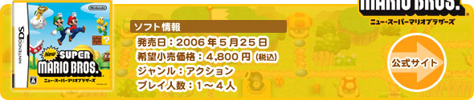
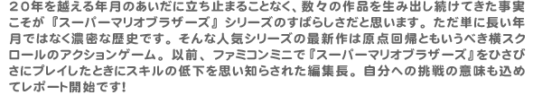
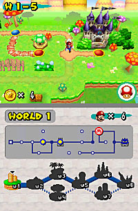
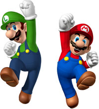
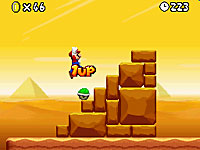
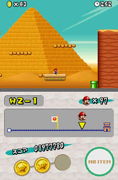

|
|
|  |
 |
|
 ソフトのパッケージは、かつてのファミコン版を思い出させてくれる黄色バージョン。ファミコンで遊んだ世代にはグッとくる粋な演出ですね。設定を終えて早速ゲームスタート！各コースへ移動するにはマップ画面を利用します。『スーパーマリオブラザーズ3』から導入されているこのシステムは大好きです。見下ろす視点で箱庭風のマップ上にいるマリオ達を眺めていると、まるで彼らの世界が画面の内側に存在しているような雰囲気。ずっと眺めていても飽きないです。今回は上下2画面になったことでマップ画面の情報量もすごく多いですよ。土管でワープができるコースにはマップ画面のほうにも土管がこっそり登場していて、想像力をかきたてるグラフィックになっています。さあ、ピーチ姫を助けるための冒険の始まりです！
シンプルな操作がゲームを単調にさせてしまうのではなく、むしろ考え抜かれたコースデザインによって誰もが簡単に遊ぶことができる。『スーパーマリオブラザーズ』が持つ、この楽しさは今回も健在です。個人的にアクションゲームは序盤の数ステージが楽しみなんです。プレイヤーにゲームの全体像を教えるべく、開発スタッフ側のメッセージがたくさん込められているから。その点、今作はワールド1における各コースの構成が見事です。コースを少しずつ進めるたびに、各アクションをどこで使えばいいか“現場で”レクチャーしてくれますよ。
初心者が少し手間取るのはジャンプぐらいかも。ジャンプはボタンを短く押すと低くジャンプ、そのままボタンを押した状態にすると高くジャンプと、ボタンを押した長さに合わせてジャンプの高さも変わります。あわててしまうと、ついつい狙いとは異なる高さのジャンプの操作をしてしまうことも多い。だから狭い足場が続くような場所ではポンっと押すか、グッと押し続けるか決めてから、次の足場へジャンプするといいですよ。
ちなみに、ゲームセレクト画面のオプションでダッシュボタンとジャンプボタンの割り当てを選択できるのですが、編集長はダッシュ＝B・Yボタン、ジャンプ＝A・Xボタンに指定してゲームをスタート。編集長にとっては、やはりマリオの操作方法といえば“Bダッシュ”が合言葉なんです。 |
|
ゲームを始めたばかりの頃はセーブが限られた場所でしかできないので、苦戦しているアクションゲーム初心者も多いのでは？そんなアクションゲーム初心者に活用してほしいのがコースクリア時のボーナスです。ゴールのポストへつかまるときに残りタイムの末尾2桁をゾロ目にするとワールドのスタート地点にキノピオの家が出現します。末尾2桁の数字が11・22・33だとアイテム、44・55・66だと1UPキノコ、77・88・99なら巨大キノコが入手できるんです。ステージをクリアするたびにアイテムのストックやマリオの人数を増やせるので、少し安心してチャレンジができるはず。
 また、テクニックに自信のあるシリーズのファンなら無限1UPも試してみてください。序盤だとワールド2-4のゴール手前、階段状の足場からノコノコが降りてくる場所がオススメですよ。慣れないうちは簡単にクリアするのもオーケー。そのうち「自信もついたし、もう少し難しい方法も試してみようかな？」という気持ちになってきますから。プレイヤーのスキルにあわせてゲームを進めていける懐の深さがあります。 |
 マリオの残り人数に余裕があると終盤のコース攻略もプレッシャーが少ないですね。やはり目の前の仕掛けよりも自分との戦いなんだ……そしてワールド8をクリアをしてピーチ姫を助け出すと、もう一度ワールド１から再挑戦。このとき驚くのがワールド4と７が丸ごと手付かずだったこと。悔しい半面、まだまだこの世界で遊ぶことができると喜びもあったりして。
ワールド4へ行くためのポイントはマメマリオでした。ワールド2の城にいるボスをマメマリオで倒すとワールド4へ分岐していくんです。マメマリオは他にも隠しルートを探す上で重要です。コースの途中で細い土管を見かけるとせっせとメモ（自分では“マメモ”と呼んでます）して、他のコースでマメキノコをゲットしてから再挑戦しています。最初のプレイではわからなかったルートを発見して、遊ぶことのできる世界が広がっていく感覚は格別です。まだスターコインも全部集めていないし、これはしばらくハマッてしまいそう！ |
|
|